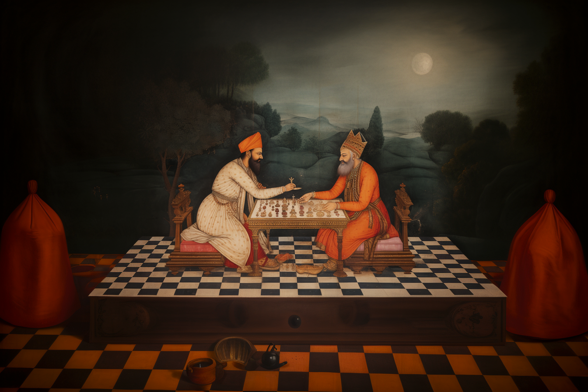

Once upon a time in ancient India, a wise courtier presented a challenge to his king using a chessboard and some grains of rice. He placed a single grain of rice on the first square of the chessboard, then asked the king to double the number of grains on each subsequent square until all 64 squares were filled. Initially, the king thought that the result would be a meaningless amount of rice, but he soon realized the astronomical sum this would amount to.

“Generated with Midjourney”
This story illustrates the power of exponential growth, a mathematical concept that can describe certain patterns in nature and society. Exponential growth occurs when the rate of growth is proportional to the current value, leading to increasingly rapid growth over time. This type of growth can be found in many real-world phenomena, including the spread of disease, and the adoption of new technologies.
Note
Pandemics: In the early stages of a pandemic, such as COVID-19, the number of infections may double within a fixed time period, leading to an exponential increase.
Social Media and Viral Content: Posts or videos that “go viral” on social media platforms can exhibit exponential growth. A piece of content might be shared by a few people initially, but if each person who sees it shares it with others, the total number of views can grow exponentially.
Environmental Concerns: Exponential growth can also have negative consequences, such as in the spread of invasive species or the consumption of non-renewable resources, leading to potential environmental damage.
I will use the story of chess to demonstrate how quickly the number of grains grows when it doubles over the course of only 64 steps. I will also provide Python code to calculate the total number of grains on the chessboard.
Python Code to Compute the Total Number of Grains
Imagine you have a bag of grains, and you want to fill a chessboard with them. You start with one grain on the first square, then double the number of grains on each subsequent square until you reach the 64th square. You can think of this process like a snowball rolling down a hill, getting bigger and bigger as it goes.
In Python, we can use something called a while loop to replicate this process. It’s like having a robot that puts the grains on the squares for you, following your exact instructions: “Start with one grain, then double the number, and keep going until you fill all 64 squares.”
While Loop
A while loop continues to execute the block of code as long as a specified condition is true. It checks the condition before each iteration, and if the condition is false, it exits the loop.
Now, let’s think about a different way to approach the task using what’s called a for loop. Imagine instead that you have 64 small containers, each representing a square on the chessboard, and you know exactly how many grains should go in each one. Starting with the first container, you fill it with one grain, then move to the next one and fill it with double the grains of the previous container, and so on, until you reach the 64th container.
For Loop
A for loop works like this staircase-building process. You tell the computer exactly how many times to repeat something, and it follows your instructions step by step. Unlike the snowball rolling down the hill, which might take an unpredictable path, building the staircase (or using a “for loop”) is more controlled and precise.
While Loop in python
Lets to compute that number of grains using the while loop.
# Initialize variablessquare_number =1# The number of the current squaregrains_on_square =1# The number of grains on the current squaretotal_grains =0# The total number of grains so far# Loop through each square on the chessboardwhile square_number <=64:# Add the number of grains on the current square to the total total_grains += grains_on_square# Double the number of grains on the current square for the next square grains_on_square *=2# Move to the next square square_number +=1print(f"The total number of grains on the chessboard is: \n{total_grains:,}")
The total number of grains on the chessboard is:
18,446,744,073,709,551,615
So, it’s a big number. Here are some interesting facts about this number:
Note
This number in words is eighteen quintillion, four hundred forty-six quadrillion, seven hundred forty-four trillion, seventy-three billion, seven hundred nine million, five hundred fifty-one thousand, six hundred fifteen, or approximately 18 quintillion, or 18 billion billion.
In seconds, it is equal to 293,274,701,009 years, 3 weeks, 3 days, 15 hours, 30 minutes, 7 seconds.
If each grain of rice were 0.05 grams in weight, then the total weight of rice would be 922337203685.48 tons.
# Total number of grains as computed earliertotal_grains =18446744073709551615# Weight of a single grain in gramsweight_per_grain =0.05# Compute the total weight in gramstotal_weight_grams = total_grains * weight_per_grain# Convert to kilogramstotal_weight_kilograms = total_weight_grams /1000# Convert to metric tonstotal_weight_metric_tons = total_weight_kilograms /1000print(f"The total weight of the rice in grams is {total_weight_grams:.2f} grams")print(f"The total weight of the rice in kilograms is {total_weight_kilograms:.2f} kilograms")print(f"The total weight of the rice in metric tons is {total_weight_metric_tons:.2f} metric tons")
The total weight of the rice in grams is 922337203685477632.00 grams
The total weight of the rice in kilograms is 922337203685477.62 kilograms
The total weight of the rice in metric tons is 922337203685.48 metric tons
Let’s finish this post by comparing the while loop with the for loop.
Aspect
While Loop
For Loop
Condition vs Sequence
Uses a condition that can be any logical expression, continues iterating as long as the condition is true.
Iterates over a sequence of values, executing the code block once for each value.
Control Over Iteration
You have full control over how many times the loop iterates by manipulating the condition.
The number of iterations is defined by the length of the sequence.
Potential for Infinite Loop
There’s a risk of creating an infinite loop if the condition never becomes false.
Generally not at risk for infinite loops, as it iterates over a finite sequence.
Use Cases
Often used when you don’t know how many times you’ll need to iterate.
Used when you want to iterate a known number of times or over a specific sequence.
Conclusion
The chessboard problem illustrates how quickly numbers can grow when they double with each step. By using a while loop in Python, we’ve computed this enormous figure, providing insight into the power of exponential growth.
This example shows how Python can be used to solve problems that would be otherwise challenging to compute manually. Feel free to explore the code further, perhaps by changing the number of squares or the initial number of grains. What other intriguing patterns might you discover?